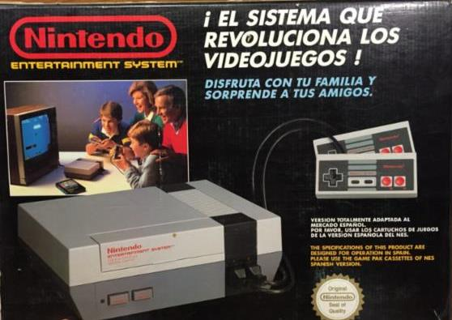

<
La primera consola de Nintendo y la que supuso un auténtico boom en el mundo de los videojuegos, vendiendo aproximadamente 60 millones
de unidades. Definió cómo tenían que ser los juegos y cómo jugarlos,
gracias a su cruceta direccional inventada por Gunpei Yokoi, que
sustituiría el ya antiguo joystick de los hogares.
Gracias a su éxito en ventas: Super Mario Bros,
Nintendo puso de moda el género de los juegos de plataformas.
>
